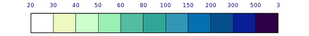
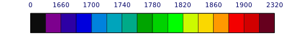
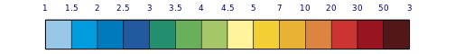
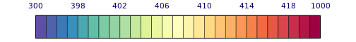
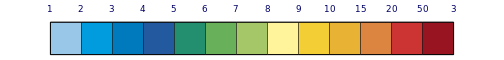
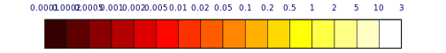

Leyenda
Profundidad óptica del aerosol de la quema de biomasa a 550 nm:
Los aerosoles de la quema de biomasa son responsables de muchos problemas medioambientales. Tienen una grave influencia en la salud humana y, debido a sus propiedades ópticas y al consiguiente impacto en el balance de radiación de la radiación, los aerosoles de la combustión de biomasa afectan al clima del planeta.
(CO) Monóxido de carbono a 500 hPa:
El CO es un compuesto que surge de la combustión incompleta. Típicas fuentes de este compuesto son procesos de quema con déficit de oxígeno. Su correlación con el material particulado fino es un indicador de presencia de combustión incompleta. Como tal no presenta dificultades ambientales, si bien puede ser químicamente activo en la formación del smog fotoquímico. A niveles ambientales, no es esperable que el CO genere afecciones agudas o crónicas a la salud.
(CH4) Metano a 500 hPa:
Es uno de los gases de efecto invernadero de larga vida(GEILV), es químicamente estables y persisten en la atmósfera durante escalas de tiempo desde décadas hasta siglos o más, de modo que sus emisiones ejercen su influencia en el clima a largo plazo. En la actualidad, el % de las emisiones de CH4 tiene origen en las actividades humanas, principalmente en la quema de biomasa, tanto en los incendios forestales como para uso energético.
Dióxido de nitrógeno a 500 hPa:
El dióxido de nitrógeno forma parte de un grupo de contaminantes gaseosos que se producen como consecuencia del tráfico rodado y de otros procesos de quema de biomasa y combustibles fósiles. El óxido de nitrógeno causa un olor desagradable y una neblina café que irrita los ojos y la nariz y es perjudicial para las personas. Los óxidos de nitrógeno son producidos solamente a altas temperaturas, que sólo se alcanzan cuando el combustible forestal es totalmente consumido.
(CO2) Dióxido de carbono:
El dióxido de carbono no es un contaminante del aire en un sentido usual. Sin embargo, es monitoreado por ser un indicador de eficiencia de la quema. Los sistemas de producción silvícola y agrícolas tradicionales, con su movimiento de tierra y quema, provocan un incremento significativo del CO2 en la atmósfera, representando el carbono liberado por las quemas un 30% de sólidos en suspensión que contribuyen al efecto invernadero.
Formaldehído a 500 hPa:
Los formaldeidos e hidrocarbonos contienen miles de componentes producidos durante la combustión de la materia orgánica. Algunos reaccionan en el aire para producir un “smog” irritante. La combustión del combustible forestal no es el mayor contribuyente de los hidrocarbonos contaminantes. Las mediciones han oscilado entre 2,3 y 122 kilos por tonelada de combustible forestal, comparando a los 59 kilos producidos por tonelada de gasolina.
Potencia radiativa del fuego [W m-2]
La medición satelital de la energía radiativa del fuego (FRE) o la velocidad de liberación de la potencia radiativa del fuego (FRP) permite distinguir entre incendios con diferentes potencias. La FRP puede ser definida como la parte de la energía química emitida en forma de radiación dentro del proceso de combustión de la biomasa.
(PM2.5) Partículas finas [ug / m3]
 Probablemente las más importantes categorías de emisiones son las partículas del humo. Ellas son la mayor causa de reducción de la visibilidad y sirven como superficie de absorción de los gases nocivos que puedan estar presentes en el ambiente. Esta contaminación atmosférica, en especial el material particulado, influye significativamente al origen de problemas broncopulmonares en la población humana
circundante y pueden agravar las condiciones respiratorias en individuos susceptibles, especialmente en combinación con los óxidos de sulfuro. La emisión de partículas depende del tipo de combustible e intensidad del fuego. El frente del incendio produce por sobre tres veces más que la cola de los incendios. Estos aportes pueden variar entre 0.0025 a 0.0135 toneladas por tonelada de vegetación quemada.
Probablemente las más importantes categorías de emisiones son las partículas del humo. Ellas son la mayor causa de reducción de la visibilidad y sirven como superficie de absorción de los gases nocivos que puedan estar presentes en el ambiente. Esta contaminación atmosférica, en especial el material particulado, influye significativamente al origen de problemas broncopulmonares en la población humana
circundante y pueden agravar las condiciones respiratorias en individuos susceptibles, especialmente en combinación con los óxidos de sulfuro. La emisión de partículas depende del tipo de combustible e intensidad del fuego. El frente del incendio produce por sobre tres veces más que la cola de los incendios. Estos aportes pueden variar entre 0.0025 a 0.0135 toneladas por tonelada de vegetación quemada.